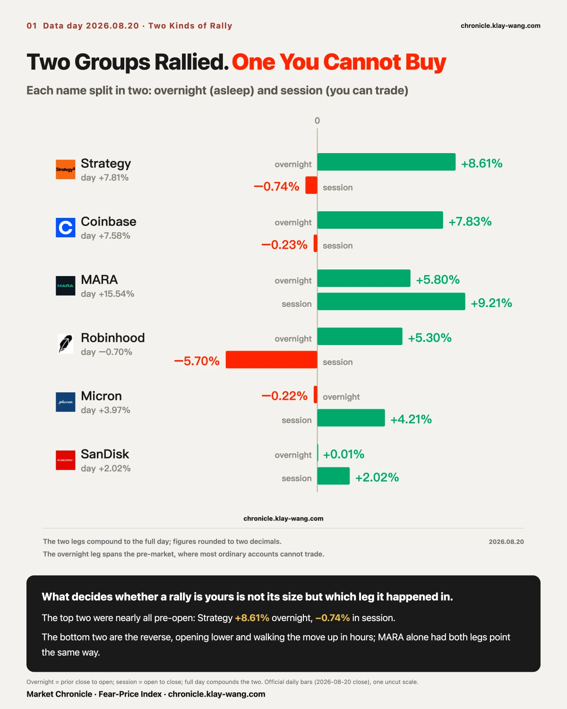
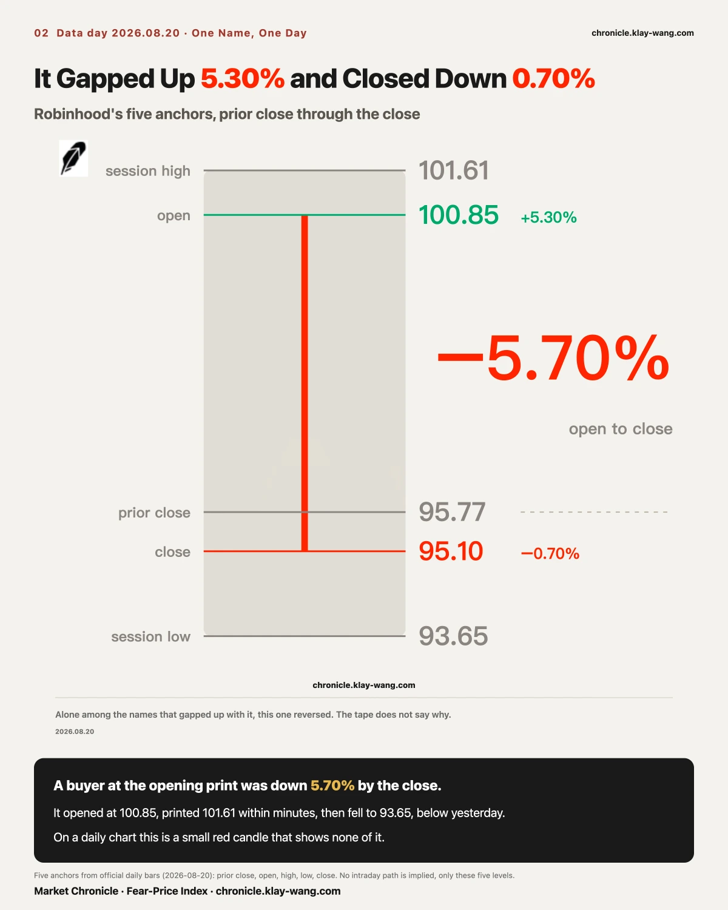
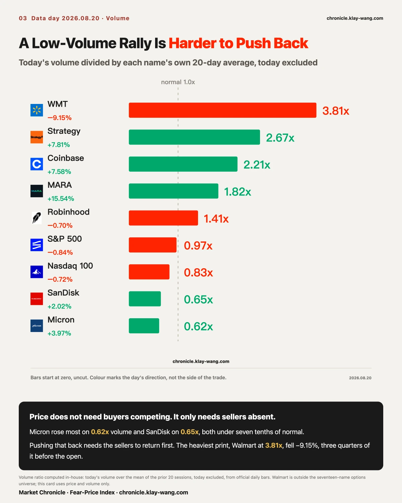
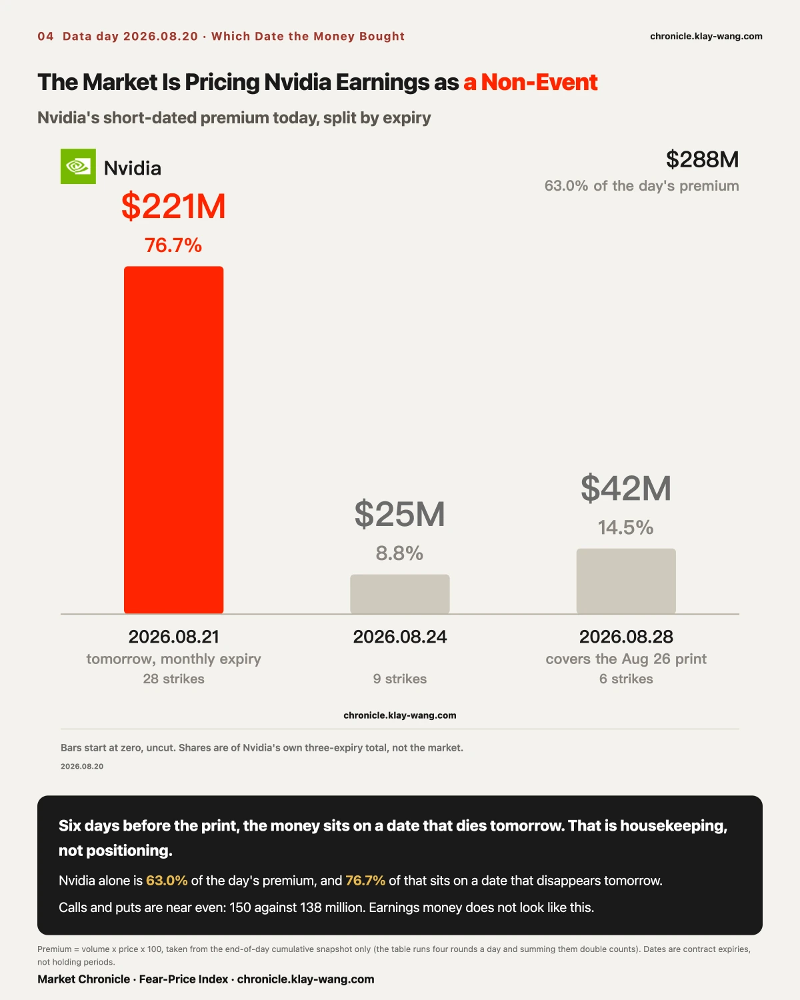
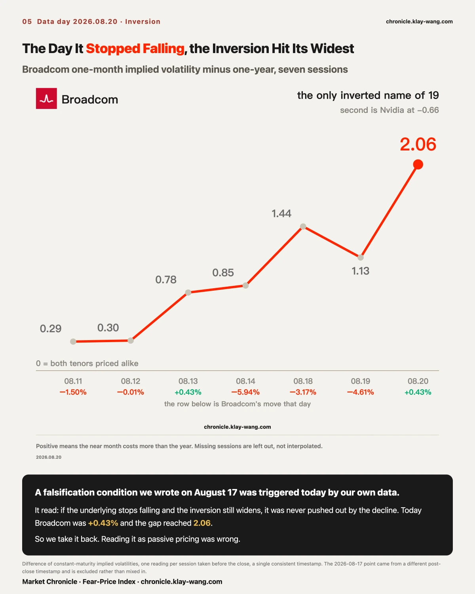
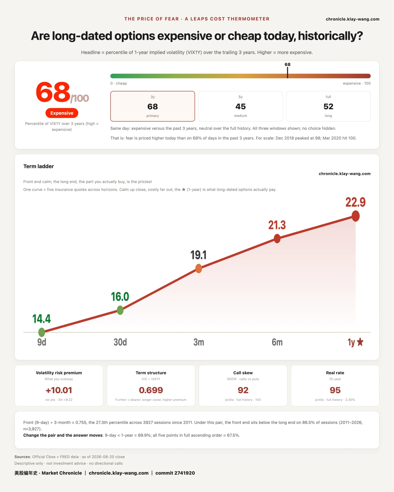

MicroStrategy closed up 7.81%, near the top of the board. The number is close to meaningless for most accounts: 8.61 points of it were in place before the opening bell, and during regular hours the stock was down 0.74%. Coinbase ran the same shape, a 7.83% gap against a session leg of minus 0.23%.
Micron rose 3.97% on the same session and opened lower, gapping minus 0.22%. Every point of its advance was walked up during hours. SanDisk matched it.
The leaderboard files those two side by side and prints them in one shade of green. They are not the same kind of return.
Volume separates them cleanly. MicroStrategy traded 2.67 times its twenty-day average and Coinbase 2.21 times. Micron traded 0.62 times, SanDisk 0.65. A stock that gains close to 4% on under six tenths of normal turnover is not short of buyers. It is short of sellers.
For two consecutive sessions this market has moved on the absence of one side. Yesterday the four hardest-hit names all traded light, and the conclusion here was that nobody was selling, the bid had simply left. Today the two strongest names traded just as light. Same mechanism, opposite direction.
Most desks will file two sessions like this under quiet consolidation. The reading here is different: the book is thinning, and it is thinning into the day before monthly expiration. A market that a half day without bids can push down, and a half day without offers can push up, is one where the capital willing to stand in the middle is shrinking.
The falsification is specific. If volume returns above average after tomorrow's settlement while daily ranges narrow, these two sessions were routine pre-expiry quiet, and the next issue will say so.

A session splits into two legs: the overnight leg from prior close to open, which most accounts cannot trade, and the regular-hours leg, which is the tradable part.
| Name | Prev close | Open | Close | Overnight | Session | Full day |
|---|---|---|---|---|---|---|
| MicroStrategy | 104.25 | 113.23 | 112.39 | +8.61% | −0.74% | +7.81% |
| Coinbase | 160.20 | 172.75 | 172.35 | +7.83% | −0.23% | +7.58% |
| MARA | 9.65 | 10.21 | 11.15 | +5.80% | +9.21% | +15.54% |
| Robinhood | 95.77 | 100.85 | 95.10 | +5.30% | −5.70% | −0.70% |
| Micron | 937.11 | 935.01 | 974.33 | −0.22% | +4.21% | +3.97% |
| SanDisk | 1568.87 | 1569.00 | 1600.62 | +0.01% | +2.02% | +2.02% |
Ranked by the full day, the top three are MARA, MicroStrategy and Coinbase, with Micron fifth. Ranked by the session leg, the order inverts: MARA at plus 9.21%, Micron at plus 4.21%, SanDisk at plus 2.02%, while MicroStrategy and Coinbase fall below zero.
The second table describes the opportunity that actually existed. The first is a headline. Both exist every session. Only one gets quoted.
MARA was the only name of the six whose two legs pointed the same way, plus 5.80% overnight and plus 9.21% after that. The scarce thing today was that shape, not the largest number on the board.

Robinhood gapped up 5.30% to open at 100.85 and touched its high of 101.61 within minutes. The gap was then given back in full and more: a low of 93.65, below the prior close of 95.77, and a settle at 95.10, down 0.70% on the day. Bought at the open and held to the close, that is a 5.70% loss.
The names that gapped with it finished in very different places:
| Name | Overnight gap | Close within the day's range | Volume ratio |
|---|---|---|---|
| MARA | +5.80% | 96.7% | 1.82x |
| MicroStrategy | +8.61% | 75.0% | 2.67x |
| Coinbase | +7.83% | 72.0% | 2.21x |
| Robinhood | +5.30% | 18.2% | 1.41x |
The first three closed in the top third of their ranges. Robinhood closed at 18.2%, effectively on its low.
That combination reads the intent. If the problem were an absent bid, volume would have contracted; instead it ran 1.41 times normal. High volume, a spike at the open, and a close on the low is supply being worked out at the highs, not demand failing at the lows. Overnight news lifted the opening print to a level, and that level became the exit.
The distinction is cheap to make: a fade on shrinking volume means nobody showed up; a fade on expanding volume means somebody delivered.
The falsification is equally specific: if it reclaims today's gap on expanding volume from here, then today's turnover was accumulation rather than distribution, and that will be corrected in a later issue.

Each name's session volume against its own prior twenty-day average:
| Name | Full day | Volume ratio |
|---|---|---|
| Walmart | −9.15% | 3.81x |
| MicroStrategy | +7.81% | 2.67x |
| Coinbase | +7.58% | 2.21x |
| MARA | +15.54% | 1.82x |
| Robinhood | −0.70% | 1.41x |
| S&P 500 fund | −0.84% | 0.97x |
| Nasdaq 100 fund | −0.72% | 0.83x |
| SanDisk | +2.02% | 0.65x |
| Micron | +3.97% | 0.62x |
Walmart was the only large-cap to print above three times normal volume, falling 9.15% on earnings from a prior close of 114.30, opening at 106.38 and settling at 103.84. Of that 9.15%, 6.93 points were the gap, three quarters of the move, delivered when nobody could trade it.
The remaining quarter is informative too. It opened at 106.38, made its high of 107.00 near the open, bottomed at 102.85 and settled at 103.84, closing at 23.9% of the day's range on 3.81 times normal volume.
An earnings gap generally resolves one of two ways. It opens lower and works back up, closing in the upper half, which is the market treating the overnight news as cheap inventory. Or it opens lower and grinds, closing on the lows, which says sellers still have the upper hand at that price. Today was the second, and it happened on triple volume. Heavy turnover on the way down is not base-building. It is inventory still leaving.
Falsification: if it reclaims today's gap on equal or greater volume in the next session, today was the tail of a capitulation rather than the middle of one, and the reading is void.
The information sits in the Micron line: 0.62 times volume, up 3.97%. A low-volume advance does not mean buyers are chasing. It means nobody is willing to offer at that price. A high-volume advance can be pushed back by the same volume that made it. A low-volume one has to wait for the sellers to return.
This is where the letter parts company with most of today's recaps. They will lead with Walmart and give Micron a line. The order should be reversed. Walmart's move was delivered where nobody could participate. Micron's was delivered where everybody could.
What was written here yesterday about the falling side holds today on the rising side, unchanged. A thin book does not care about direction.

Short-dated premium across the tape totalled 457.5 million dollars today. Nvidia alone accounted for 288.1 million of it across 43 strikes, or 63.0%. One name taking six tenths of the tape reads like heavy positioning for a print six days out.
Split by expiry, it inverts.
| Expiry | Strikes | Premium | Share |
|---|---|---|---|
| 2026-08-21 (tomorrow, monthly expiration) | 28 | 221.1M | 76.7% |
| 2026-08-24 | 9 | 25.3M | 8.8% |
| 2026-08-28 (first expiry covering the August 26 print) | 6 | 41.7M | 14.5% |
Calls and puts were close to even, 150.5 million against 137.6 million.
Money genuinely positioned for a print concentrates on the expiry covering it and leans clearly to one side. This money sat on a date that dies tomorrow, and it sat on both sides in near-equal weight. That is expiration housekeeping, not positioning.
Which implies the market currently treats this print as something it does not need to prepare for. Six days before the most watched single quarter of the year, that is the hardest consensus here to follow. Price after August 26 will settle it, and it is on the record.
Yesterday's section and today's measure different things. Yesterday the claim was that the market was buying August 26 as a date, on the evidence that implied volatility doubled at the expiry spanning the print. That is price. Today is flow. The pricing centre of gravity is August 28; the money's centre of gravity is August 21. A market can put a high price on distant risk while transacting almost everything at the nearest expiry.
The single most extreme strike of the day: the August 21 put at 237.5, 8224 contracts traded against open interest of 76, or 108.2 times. It sits 9.5% above spot, deep in the money, and expires tomorrow.

Broadcom's one-month implied volatility has exceeded its one-year for six sessions. Today the gap reached 2.06, the widest of the series, and the single-day widening of 0.93 was also the largest. Of 19 names tracked, Broadcom remains the only one inverted; Nvidia is second at minus 0.66.
Same-timestamp series, one reading per session taken at 15:45: 0.29, 0.30, 0.78, 0.85, 1.44, 1.13, 2.06.
The point is that Broadcom did not fall today. It settled at 364.03, up 0.43%, its first up session after two consecutive declines.
The falsification condition written down on August 17 was explicit: if the inversion keeps widening while the underlying is no longer falling, then reading it as passive pricing pushed out by a decline does not hold.
That condition triggered cleanly. Reading Broadcom's inversion as passive pricing was wrong.
The replacement reading is equally definite. A stock that has stopped falling, whose one-month insurance keeps getting more expensive, points to somebody paying for a dated event inside the next month and only inside it. The one-year quote barely moved, still at 47.87. This is not a change of view on Broadcom's long run. It is the pricing of a near-term calendar.
Its own falsification condition: if the inversion contracts back below 1 on sessions where the underlying is still not falling, it was a short-dated volatility twitch with no calendar behind it, and that will be said here too.

Today's reading is 67.9, against 63.4 on August 19. One-year volatility moved from 22.69 back to 22.90.
The five tenors, two sessions side by side:
| Tenor | Aug 19 | Aug 20 | Change |
|---|---|---|---|
| 9 day | 12.66 | 14.39 | +1.73 (+13.7%) |
| 1 month | 14.89 | 16.01 | +1.12 (+7.5%) |
| 3 month | 18.57 | 19.06 | +0.49 (+2.6%) |
| 6 month | 20.90 | 21.25 | +0.35 (+1.7%) |
| 1 year | 22.69 | 22.90 | +0.21 (+0.9%) |
All five moved down together yesterday, which is why the line here was that the wording was the wording and nobody paid an extra cent of insurance for it. All five moved back up today while the S&P fell only 0.84%. Half of that line was right. The other half needs correcting: yesterday's cheapness did not mean the market was unafraid, only that the day it had to pay had not arrived.
The distribution shows it. The nearer the tenor, the larger the repricing: the nine-day quote is 13.7% more expensive overnight, the one-year moved 0.9%. The curve pivoted around its far end.
One layer further out, the September 17, 2027 expiry, 393 days away, prices as a clean downward slope: the S&P strike 4.27% below spot costs 19.72, the strike 4.25% above costs 16.95, so the downside costs 2.77 volatility points more at the same distance. The Nasdaq fund matches, 25.58 below against 23.84 above, a gap of 1.74. What got repriced today was the next few days only. The one-year layer moved neither in level nor in tilt.
The curve has been saying one thing throughout: the market does not pay for the wording of a document, it pays for a specific date. Tomorrow is the August monthly expiration and a month of positioning settles. Short-dated insurance being repriced the day before is a far more concrete event than any set of minutes.
First, the volatility futures roll, where our arithmetic yesterday and today's print differ by 0.19. Yesterday we wrote that the August contract expired, the front reading was 15.29, the next contract stood at 17.61, and the reading would mechanically jump 2.32 points, which is not a market event. Today's front reading printed 17.80, a jump of 2.51 points. Of that, 2.32 is the calendar and 0.19 is what the market actually did. Spot VIX went from 14.89 to 16.01 on the same day, up 1.12. The roll turned a real change of 0.19 into a surface change of 2.51. Separating the two in advance is the entire point of this section.
Second, whether Broadcom's inversion kept widening from 1.13. It did, to 2.06, a new high, and we retracted one of our own readings along the way.
Third, all four legs of the September 11 index puts kept their open interest.
Yesterday's test was written down plainly: if both legs see open interest rise by similar amounts, the spread reading is confirmed. Today all four settled figures arrived.
| Contract | Prior OI | Settled OI | Change | Prior volume | Change / volume |
|---|---|---|---|---|---|
| Nasdaq fund Sep 11 put, 705 | 1372 | 33721 | +32349 | 33448 | 96.7% |
| Nasdaq fund Sep 11 put, 680 | 1444 | 33897 | +32453 | 33349 | 97.3% |
| S&P fund Sep 11 put, 760 | 1923 | 35094 | +33171 | 33945 | 97.7% |
| S&P fund Sep 11 put, 740 | 2599 | 34143 | +31544 | 33753 | 93.5% |
All four rose together, and all four ratios land in a narrow 93 to 98 percent band. Reading this as one bounded structure holds.
One point of method, because it will bite again: open interest settles a beat behind the trades, and the two data sources we use are themselves a settlement cycle apart. These four figures are the version that reflects yesterday's trading, not two sources from the same day read against each other.
Fourth, the Microsoft calls. Open interest collapsed, the cause is now established, and it overturns not the number but the characterisation in yesterday's issue.
Settled open interest fell across all eight strikes: the 390 call from 600 to 16, the 415 from 2219 to 1, the 425 from 957 to 1, the 435 from 1673 to 12, a combined decline of 6882 contracts. The in-the-money band now holds 498 contracts, while open interest sits far out of the money, 10480 at the 540 call, 7646 at 530, 4445 at 520.
The first instinct is a same-day round trip. The actual cause is something else.
Microsoft's ex-dividend date is August 20, at 0.91 dollars a share. A deep in-the-money call captures that dividend only by exercising on the session before the ex-date, which is August 19, precisely the day these positions disappeared into.
Price confirms it a second way. All eight strikes traded below intrinsic value on August 19:
| Strike | Traded | Intrinsic | Difference |
|---|---|---|---|
| 390 | 93.25 | 94.31 | −1.06 |
| 395 | 88.85 | 89.31 | −0.46 |
| 400 | 83.80 | 84.31 | −0.51 |
| 415 | 68.80 | 69.31 | −0.51 |
| 420 | 63.60 | 64.31 | −0.71 |
| 425 | 58.55 | 59.31 | −0.76 |
| 430 | 53.45 | 54.31 | −0.86 |
| 435 | 49.13 | 49.31 | −0.18 |
(Intrinsic is Microsoft's August 19 close of 484.31 less the strike.)
Paying less than intrinsic for a call makes sense in one case only: immediate exercise. Buy it, exercise it, collect the 0.91 dollars. That is routine the day before an ex-date, and it is not a directional position.
So yesterday's section needs correcting in kind, not just in degree. The line about the most concentrated bet of the day, roughly 115 million dollars, was wrong. It was not a bet. It was a dividend capture. A single strike printing a few cents below intrinsic could be a timestamp artifact. Eight of eight below intrinsic, on the session before the ex-date, with open interest gone the next morning, is three independent confirmations pointing the same way.
The falsification conditions for today's calls, recorded here so the next issue can settle them:
If the three crypto names print the reverse combination tomorrow, a negative gap with a positive session leg, then reading gap-driven rallies as unavailable was a one-day shape; a repeat strengthens it.
If Micron and SanDisk turn lower tomorrow on the same sub-1x volume, then a thin book cutting both ways holds more completely; if they need 1.5x volume or more to keep rising, today's low-volume advance needs a different explanation.
If Broadcom's inversion contracts back below 1 on days when the underlying is still not falling, today's active-pricing reading gets withdrawn.
If Nvidia's August 24 and August 28 premium does not pick up after tomorrow's expiration, today's expiration-housekeeping reading holds; if it picks up sharply, today's money was only queueing to roll.
A leaderboard should be sorted by what you could have participated in, not by size. Of MicroStrategy's plus 7.81% today, the part an ordinary account could touch was minus 0.74%.
A low-volume rally is harder to push back than a high-volume one, because pushing it back requires the sellers to come back first. Micron rose 3.97% on 0.62 times normal volume.
For two sessions running this market has moved in both directions on absence. Most will call that calm. We call it thinning liquidity.
Fear-Price Index · 2026-08-20 · reading 68/100: one-year volatility (VIX1Y) at 22.90, the 68th percentile of the past three years, where higher means more expensive. Daily ledger and methodology → chronicle.klay-wang.com · Please credit: Fear-Price Index · Market Chronicle